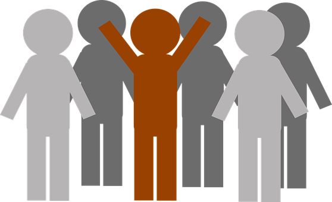

Liderazgo
Habito 1
Habito 2
Habito 3
Habito 4
Habito 5
Habito 6
Habito 7
Autor
Liderazgo
El liderazgo es el conjunto de habilidades gerenciales o directivas que un individuo tiene para influir en la forma de ser o actuar de las personas o en un grupo de trabajo determinado, haciendo que este equipo trabaje con entusiasmo hacia el logro de sus metas y objetivos.

Habitos
Uno de los modelos de liderazgo más innovadores es aquel que plantea su base en los hábitos. Así pues, podría hablarse de la dirección por hábitos como el resultado de la aplicación de esta técnica. Realmente, este tipo de dirección es uno de los que consigue mejores resultados. Sobre todo, a la hora de cohesionar los equipos y conseguir que se trabaje con eficiencia. Por este motivo, en este artículo se va a profundizar acerca de en qué consiste este tipo de liderazgo o dirección y cómo conseguir llevarla a cabo.